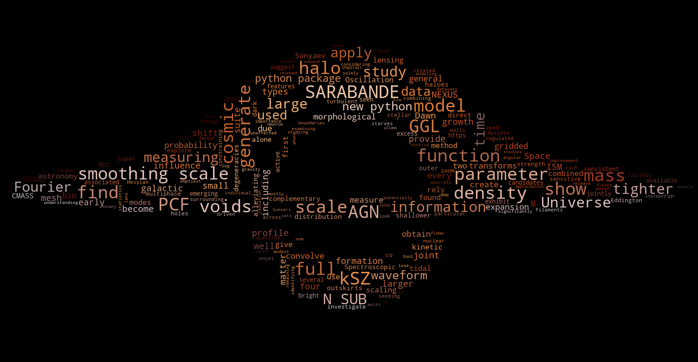

Collaborators
Below is a globe representing the affiliations of all of my collaborators I have worked with closely in my career. Feel free to click on the globe to interact with it and see where my collaborators are located in the world.

I'm broadly interested in using cosmological datasets to understand the astrophysical processes that govern the formation and evolution of galaxies in the Universe. These processes are challenging to understand because they are inherently complex and multi-scale in nature. My approach involves using CMB secondaries, weak lensing, and numerical simulations to study these processes. I enjoy making use of higher order statistics and machine learning techniques to extract as much information as possible from these complex datasets.
The simulation below is a stitching of cosmological hydrodynamical simulation spanning more than 10 orders of magnitude in scale, beginning at the scale of the cosmic web (~1 Gpc) and ending at the accretion disk of a supermassive black hole (~0.01 pc) (Credit: FLAMINGO Collaboration & Phil Hopkins @ Caltech). Scroll to explore the full range of scales and my journey thus far to understand these complex processes.

Work is always ongoing, please feel free to reach out if you have any questions or would like to collaborate on research related to my interests. My email is jsunseri@princeton.edu.
Below is a globe representing the affiliations of all of my collaborators I have worked with closely in my career. Feel free to click on the globe to interact with it and see where my collaborators are located in the world.